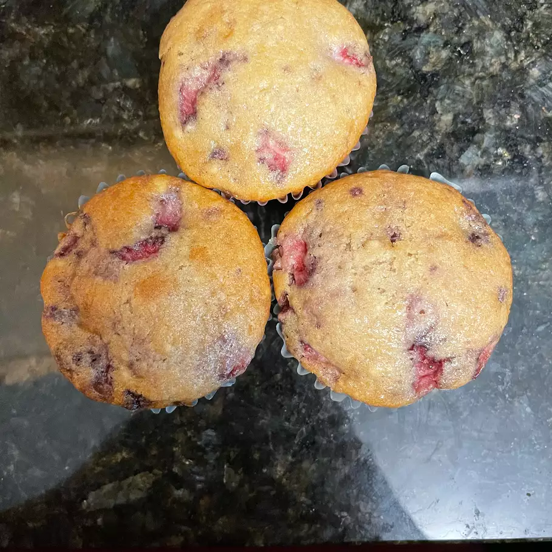

Seductive Chocolate Chip Muffins
Pictured below, my god they look good
<
Where do I begin? Muffins. MUFFINS! The verocity and vigor of the baked goods kingdom, not a day goes by where the muffin doesn't stand atop the throne of taste and desire. These choc chip muffins know exactly where on the food chain they lie, a soft fluffy top, my god, a rich chocolaty center, still HOT from the stove. Move to the top again and they are engorged with dotted choc chips still weeping chocolatey goodness
Ingredients, and where to find them?
- 1.5 cups of all purpose flour
- 1.5 teaspoons of baking powder
- 0.5 cups of white sugar
- 1 Cup of the whitest milk
- 1 Egg
- 1/3 cup of hot melted butter
- 1 cup semissweet chocolate chips
Now then, where do we begin?
Step 1. Grab your mitt and preheat that oven to 175 degrees C, lightly grease your 12 cup muffin tin or line it with paper
Step 2. Combine flour, baking powder, sugar, and salt in a large bowl. Stir in that milk, butter, eggs and chocolate chips until thoroughly combined. Pour batter into the prepared muffin cups
Step 3. Bake in the oven now its preheated until a toothpick inserted into the muffins center comes out clean, 15-20 minutes